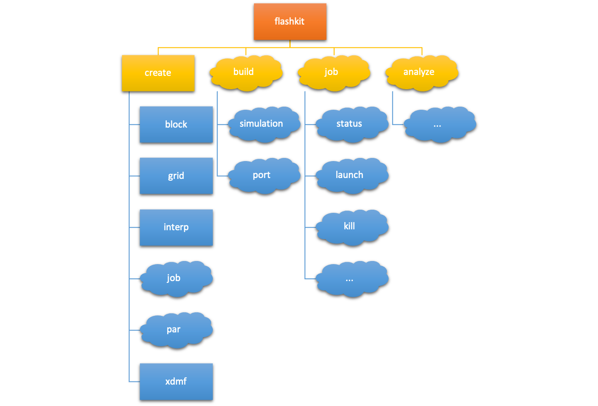

FlashKit¶
A python based sdk and simple command line interface to assist researchers in using the FLASH code.

The FlashKit library implements a useful set of abstractions to common operations reseachers perform when using the FLASH software, which are avalable from either the command line or python code with a consitant user interface. The behaviors of these operations are adaptable to the specific needs of the researcher. In particular, FlashKit uses configuration files within a folder hierarchy of simulations to implement a dynamic and reproducable behavior based on the location of execution to maximize productivity and confidence.
Features¶
The FlashKit library provides a number of useful operations for a FLASH user, which fall into several categories. These are accessed in a very natural way by specifying the catagory and operations desired. Specifically, an operation is an inteded task such as a pre- or post-processing action and catagories are collections of related operations. In this way the command line interface can provide a very ‘natural language’ interface to the user.
A this time, the inteded scope of the FlashKit library looks like the following, where the clouds indicate functions that are under development but are not yet complete.
These operations are available from the command line using:
flashkit category operation <option> <value> <flag> ...
They are also available from python code using the following interface:
from flashkit import flash
...
flash.category.operation(option=value, flag=True, ...)
There are a few minor differences in the command line and python interfaces, these are documented.
Installation¶
If you already have python 3.7 (or greater) installed on your system, you can install FlashKit on your system. FlashKit depends on a number of required (e.g., numpy and h5py) and optional (e.g., mpi4py and alive-progress) libraries; these will automatically be installed when you install FlashKit if they are already not in your enviornment.
Run the following command to retrieve and install the FlashKit library:
git clone git@github.com:GWU-CFD/FlashKit.git
pip install -e FlashKit
You should now be able to run FlashKit from the command line or from within your python code.
Getting Started¶
The introduction walkthrough is the right place to start if you are new to FlashKit.
You can also checkout the following detailed guides for understanding all of the available functionality of FlashKit:
Full documentation of the application programing interface (API) for FlashKit is available as well. You should consult this documentation with specific questions conderning how specific operations will behave and what available options they provide. Finally, a complete listing of avaialble configuration file options, template file specifications and options, and differences in the python interface are also available.
Development Status¶


If you are interested in helping provide new functionality for FlashKit, or otherwise would like to identify issues with the library or lack of clarity in documentation, please consult both the contributions and adding new features discussion of this documentation.